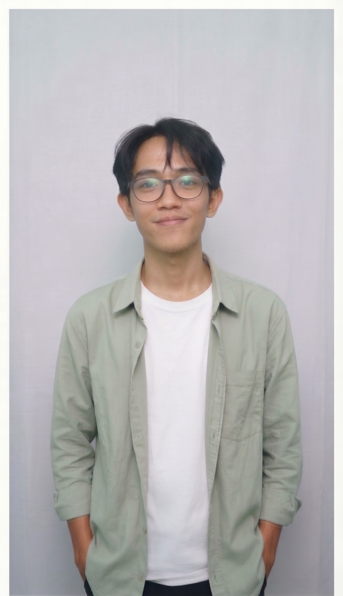

Mahasiswa Rekayasa Perangkat Lunak dengan ketertarikan pada pengembangan perangkat lunak, Game Design, AI, Android, dan teknologi digital. Memiliki pengalaman dalam pengembangan aplikasi Android menggunakan Kotlin dan XML, serta pengembangan antarmuka menggunakan Figma. Terbiasa bekerja dalam tim, mengelola proyek, dan mempelajari teknologi baru.
Project: GitHub Portfolio
Mahasiswa | 2026 – Sekarang
Pengembangan Perangkat Lunak dan Gim (PPLG) | 2026
Freelance | 2024 – Sekarang
LKS Mobile Apps | April 2025
Koordinator Divisi LitBang | 2025
2024
2023 – 2025
| Sertifikasi/Prestasi | Tahun |
|---|---|
| Sertifikasi Kompetensi BNSP – UI/UX Design, DigiUp | 2024 |
| LKS Mobile Apps Tingkat Kabupaten Majalengka | 2024 |
| LKS AI Nasional | 2026 |
| OSN Bidang AI EKKA 2026. | 2026 |